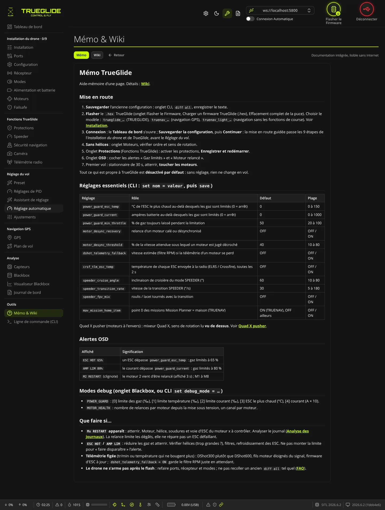
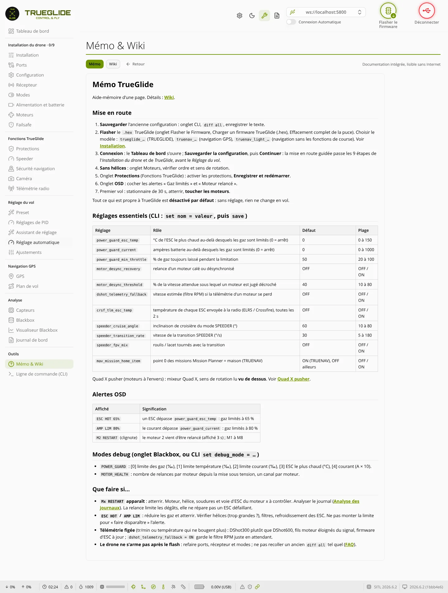

TRUE
TRUEMémo & Wiki
L'onglet Mémo & Wiki (groupe « Outils ») sert à lire la documentation TRUEGLIDE intégrée au logiciel : un mémo d'une page et un wiki de plusieurs pages, lisibles sans Internet.


Où le trouver
- Sans carte branchée : dans le menu, sous Bienvenue et Flasher le Firmware.
- Carte branchée : dans le groupe « Outils », au-dessus de la Ligne de commande (CLI).
- Le bouton Wiki en haut à droite d'un onglet ouvre directement cet onglet sur la page du wiki qui le concerne (par exemple OSD, Blackbox, GPS). Pour un onglet sans page dédiée, il ouvre la page « Menu du logiciel ».
Boutons du haut
- Mémo : l'aide-mémoire d'une page (mise en route, réglages essentiels avec défaut et plage, alertes OSD, modes debug, « Que faire si… »).
- Wiki : la page d'accueil du wiki. Une colonne Pages du wiki s'affiche à gauche pour passer d'une page à l'autre.
- Retour : revient à la page lue juste avant. Grisé tant qu'on n'a pas changé de page.
- « Documentation intégrée, lisible sans Internet » : les pages font partie du logiciel, rien n'est téléchargé.
Pages du wiki
L'ordre est celui de la colonne Pages du wiki :
- Démarrer : Installation et flash ; Modèles de firmware et cartes (TRUEGLIDE, TRUENAV, TRUENAV_LIGHT) ; Menu du logiciel.
- Fonctions TrueGlide : Protection anti-surchauffe / surintensité ; Santé moteurs ; Mode SPEEDER ; Quad X pusher ; X8 coaxial ; Navigation GPS, TRUENAV et Mission Planner ; Caméra et nacelle.
- Régler et analyser : Assistant de réglage ; Analyse des journaux ; Alertes OSD et modes debug.
- Divers : Licence et crédits ; FAQ.
Liens dans les pages
- Un lien vers une autre page du wiki ou du mémo s'ouvre dans l'onglet.
- Un lien externe (marqué d'une petite flèche) s'ouvre dans une nouvelle fenêtre du navigateur.
- Un lien barré mène à une page absente : il ne fait rien.
Langue
Les pages sont en français quand le logiciel est en français, en anglais pour toutes les autres langues.